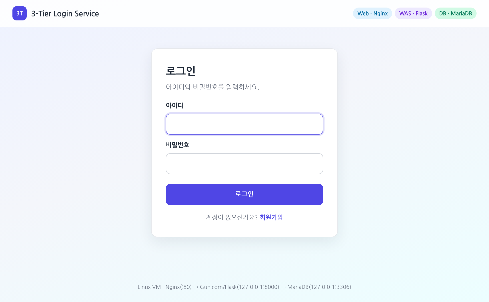
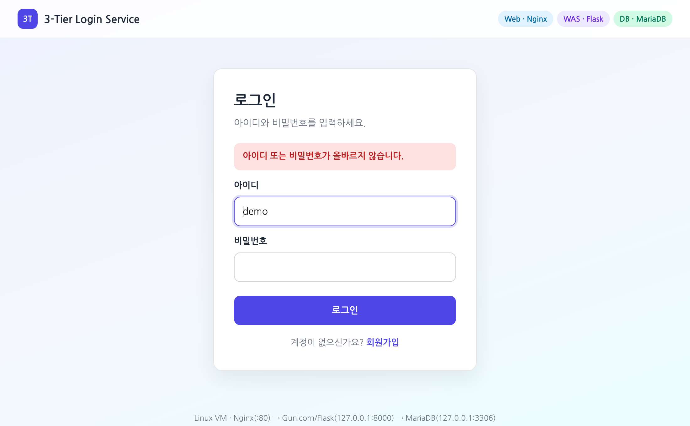
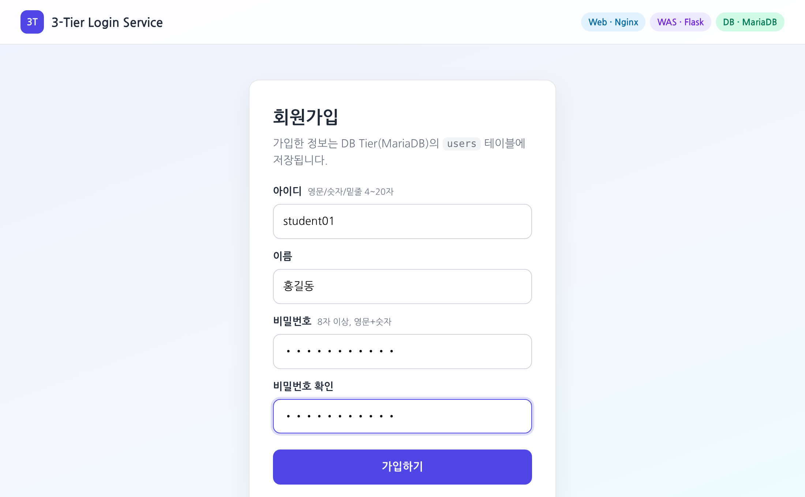
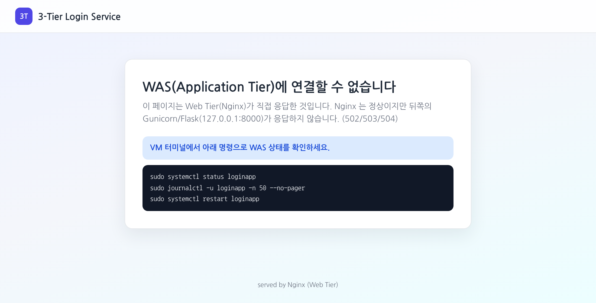
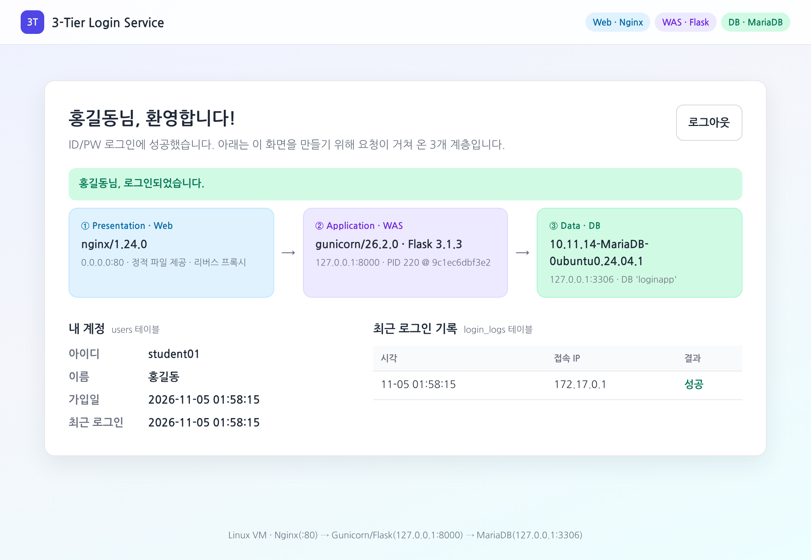

문제 — 리눅스 가상머신에 3-Tier 아키텍처 환경을 구성하고, 호스트 운영체제에서 웹 브라우저로 접속해 ID/PW로 로그인하는 서비스를 개발한다.
| 계층 | 구성 요소 | 역할 | 접근 범위 |
|---|---|---|---|
| WebPresentation | Nginx 1.24 | 정적 파일(CSS) 직접 응답, 동적 요청을 WAS로 프록시, 로그인 요청 수 제한, WAS 장애 시 안내 페이지 | 0.0.0.0:80 |
| WASApplication | Gunicorn + Flask (Python) | 로그인·로그아웃·회원가입, 세션 관리, 비밀번호 해시(scrypt), CSRF 검증, systemd 서비스 | 127.0.0.1:8000 |
| DBData | MariaDB 10.11 | 회원(users)·로그인 이력(login_logs) 저장, SELECT/INSERT/UPDATE 권한만 가진 전용 계정 | 127.0.0.1:3306 |
deploy/setup.sh)를 Ubuntu 24.04 + systemd 환경에서 실행해 3계층을 구성했고,
E2E 테스트 28개 항목 모두 통과, 다른 IP에서 접속 시 80 포트만 열리고 8000·3306은 거부됨, 재시작 후 세 서비스가 자동으로 올라오는 것까지 확인했다.
| 항목 | 값 |
|---|---|
| AI 도구 | Claude Code (Anthropic) — 대화형 챗봇이 아니라, 명령 실행·파일 작성·테스트까지 직접 수행하는 에이전트형 코딩 도구 |
| 사용 방식 | Claude 데스크톱 앱 → 클라우드 세션. GitHub 저장소 th0079/system 연동, 작업 브랜치에 커밋·푸시 |
| 모델 | 세션 기본 모델 사용 (직접 변경하지 않음) · 모델명: (기입) |
| 추론 노력(effort) | 시작 시 max → 작업 도중 사용자가 변경 |
| 권한 모드 | auto (AI가 명령 실행·파일 수정을 자동 승인으로 진행) |
| 실행 환경 | Anthropic 관리형 클라우드 컨테이너 (Ubuntu 24.04 LTS, Claude Code 2.1.318) |
| 기타 | 자동 PR 생성 꺼짐, 웹 검색 사용 안 함 |
문제를 읽고 AI 도구를 쓰기 전에, 해결 과정에서 물어봐야 할 것으로 예상한 질문 (총 15개)
| # | 입력 내용 | 비고 |
|---|---|---|
| Q1 | 과제 안내문 전체(문제 + 과제 정리 방법)를 그대로 붙여 넣음 | 첫 전송을 중단하고 같은 내용을 한 번 더 전송 |
| — | "노력 변경" (작업 도중 추론 노력 설정을 바꿨다는 알림) | 질문이 아니라 설정 변경 |
질문은 사실상 1개였다. 에이전트형 도구라서 AI가 문제를 스스로 아래 하위 작업으로 나누고, 명령을 실행해 보며 답을 만들었다. 아래는 그 답변 중 실제 결과물에 적용된 부분만 추린 것이다.
VM 한 대 안에서 포트·바인딩 주소·OS 계정으로 계층을 나눔. Web=Nginx, WAS=Gunicorn+Flask(Python이 Ubuntu에 기본 설치되어 있어 준비가 간단), DB=MariaDB.
호스트에는 80 포트만 공개하고 WAS·DB는 127.0.0.1에만 바인딩.
적용: 그림 1의 구조 그대로 구현. 디렉터리도 web/ · app/ · db/로 계층별로 나눔.
-- db/schema.sql (일부) CREATE TABLE users ( id INT UNSIGNED AUTO_INCREMENT PRIMARY KEY, username VARCHAR(20) NOT NULL UNIQUE, password_hash VARCHAR(255) NOT NULL, -- 평문 대신 해시 저장 name VARCHAR(30) NOT NULL, created_at DATETIME DEFAULT CURRENT_TIMESTAMP, last_login_at DATETIME NULL); -- setup.sh : WAS 전용 계정에 필요한 권한만 부여 (최소 권한) GRANT SELECT, INSERT, UPDATE ON loginapp.* TO 'loginapp'@'127.0.0.1'; # db/60-loginapp.cnf [mysqld] bind-address = 127.0.0.1
적용: 로그인 시도를 기록하는 login_logs 테이블 추가. MariaDB는 'localhost'(소켓)와 '127.0.0.1'(TCP)을 다른 호스트로 보므로 계정을 두 개 다 만듦 — 혼자였다면 몰랐을 부분.
# app/app.py (핵심 부분) user = query_one("SELECT id, username, password_hash, name FROM users WHERE username = %s", (username,)) password_ok = check_password_hash(user["password_hash"] if user else DUMMY_HASH, password) if not (user and password_ok): flash("아이디 또는 비밀번호가 올바르지 않습니다.", "error") # ID/PW 중 무엇이 틀렸는지 숨김 return render_template("login.html", username=username), 401 session.clear() # 로그인 시 세션 새로 발급 session["user_id"] = user["id"]
%s 자리표시자로 값 전달generate_password_hash(scrypt) 로 저장, check_password_hash 로 비교HttpOnly·SameSite=Lax, 30분 유지적용: 위 코드 + 회원가입(입력값 검증, 중복 ID 409), 로그아웃(POST), /health 헬스체크, 메인 화면에 3계층 정보 표시.
# app/gunicorn.conf.py bind = "127.0.0.1:8000" # 외부에서 직접 접근 불가 workers = 2 # deploy/loginapp.service (일부) [Service] User=loginapp # root 가 아닌 전용 계정으로 실행 ExecStart=/opt/loginapp/venv/bin/gunicorn --config /opt/loginapp/app/gunicorn.conf.py app:app Restart=on-failure [Install] WantedBy=multi-user.target # 부팅 시 자동 시작
적용: 예상 질문 15번(재부팅 후 자동 실행)의 답. 컨테이너를 재시작해 nginx·mariadb·loginapp 모두 active 확인.
# web/nginx-loginapp.conf (일부) upstream loginapp_was { server 127.0.0.1:8000; } server { listen 80 default_server; proxy_set_header X-Forwarded-For $proxy_add_x_forwarded_for; # 실제 접속자 IP 전달 location /static/ { alias /var/www/loginapp/static/; } # 정적 파일은 Nginx 가 직접 location = /login { limit_req zone=loginapp_login burst=30 nodelay; proxy_pass http://loginapp_was; } location / { proxy_pass http://loginapp_was; } error_page 502 503 504 /50x.html; # WAS 장애 안내 }
적용: 그대로 적용. WAS를 일부러 끄면 Nginx가 직접 안내 페이지(502)를 보여주고, CSS는 계속 200으로 응답 → 계층이 분리되어 있음을 눈으로 확인.
| VM 네트워크 | 설정 | 브라우저 주소 |
|---|---|---|
| VirtualBox NAT(기본) | 포트 포워딩: 호스트 127.0.0.1:8080 → 게스트 80 | http://localhost:8080 |
| VirtualBox 호스트 전용 | 어댑터2 추가 후 ip -4 addr로 IP 확인 | http://192.168.56.x |
| VMware NAT / 브리지 | 추가 설정 없음 | http://<VM IP> |
적용: setup.sh가 ufw/firewalld가 켜져 있을 때만 80/tcp를 열고, Rocky Linux면 SELinux 설정(httpd_can_network_connect)도 처리. 설치가 끝나면 접속 주소를 출력.
sudo bash week10/deploy/setup.sh # 패키지 → DB → WAS → Web → 방화벽 → 데모 계정 (7단계) sudo bash week10/tests/e2e_test.sh # curl 로 28개 항목 자동 점검
적용: 여러 번 실행해도 안전(비밀번호·데이터 유지). DB·SECRET_KEY 비밀번호는 무작위 생성해 /etc/loginapp/loginapp.env(권한 640)에 저장.
| 문제 | 원인 | 대처(적용) |
|---|---|---|
| AI 작업 환경에 systemd가 없음 | 컨테이너는 PID 1이 systemd가 아님 → systemctl 사용 불가 | setup.sh에 service 명령 대체 경로 추가. 별도로 systemd가 도는 Ubuntu 24.04 컨테이너를 만들어 실제 VM과 같은 경로로 재검증 |
| 테스트 컨테이너에서 pip 설치 실패 | AI 환경의 보안 프록시가 TLS 인증서를 바꿔 끼워 검증 실패 (AI 환경에만 있는 문제) | 호스트에서 패키지 파일을 받아 오프라인 설치로 테스트. 학생 VM에는 해당 없음 |
| Rocky Linux 9 검증 불가 | 같은 TLS 문제로 dnf 설치 실패 | RHEL 계열 분기(dnf·firewalld·SELinux)는 코드만 작성하고 미검증으로 명시 |
| # | 예상 질문 | 직접 질문? | 실제로 어떻게 해결됐나 |
|---|---|---|---|
| 1 | VM 설치 사양·네트워크 | 안 함 | 미해결 — AI는 VM이 이미 있다고 보고 다루지 않음. VM 설치는 직접 해야 함 |
| 2 | 3-Tier 개념, 계층별 역할 | 안 함 | A-1 구성표로 설명됨 |
| 3 | 한 VM에 구성해도 되나, 소프트웨어 선택 | 안 함 | A-1: AI가 Nginx/Flask/MariaDB 선택 (선택 이유도 제시) |
| 4 | Nginx 설치·실행 | 안 함 | setup.sh 1·5단계 |
| 5 | WAS 선택·설치 | 안 함 | A-4 (Tomcat 대신 Gunicorn+Flask) |
| 6 | MariaDB 설치, root 비밀번호, DB·계정 | 안 함 | A-2 — root 비밀번호 대신 Ubuntu 기본 소켓 인증 사용, 앱 전용 계정 별도 생성 |
| 7 | Nginx–WAS 연동 | 안 함 | A-5 |
| 8 | 로그인 페이지·처리 코드 | 안 함 | A-3 |
| 9 | 테이블 설계, 비밀번호 저장 | 안 함 | A-2, A-3 (scrypt 해시) |
| 10 | 세션/쿠키 | 안 함 | A-3 |
| 11 | WAS→DB 접속 코드 | 안 함 | A-3 (PyMySQL) |
| 12 | 호스트→VM 네트워크 | 안 함 | 부분 — A-6 설정 방법은 제시됐지만 AI는 내 하이퍼바이저를 직접 확인할 수 없어 내가 적용·확인해야 함 |
| 13 | 방화벽 | 안 함 | A-6 (setup.sh 6단계) |
| 14 | 502 Bad Gateway 해결 | 안 함 | A-5 안내 페이지 + README 트러블슈팅 표 |
| 15 | 재부팅 후 자동 실행 | 안 함 | A-4 (systemd) |
127.0.0.1에만 바인딩, DB 계정 최소 권한, 서비스를 root가 아닌 전용 계정으로 실행localhost/127.0.0.1 계정 구분, 80 포트를 apache2가 이미 쓰는 경우, Rocky의 SELinux 차단, 로케일에 따라 명령 출력 문구가 달라질 수 있는 점(LC_ALL=C로 고정)아래 화면은 AI 검증 환경(systemd가 동작하는 Ubuntu 24.04 컨테이너를 VM으로 보고, 바깥에서 VM IP 172.17.0.2로 접속)에서 촬영했다.
본인 VM에서 호스트 브라우저로 접속한 화면(주소창 포함)을 추가하거나 교체할 것.





sudo bash tests/e2e_test.sh, VM 내부)[1] Web Tier (Nginx)
PASS GET /health → 200 PASS 헬스체크: WAS·DB 정상 (db=ok)
PASS 요청이 Nginx 를 거쳐 WAS 로 전달됨 PASS 정적 파일 /static/style.css → 200
PASS 정적 파일에 Nginx 캐시 헤더 PASS 보안 헤더 X-Frame-Options: DENY
[2] WAS Tier (Flask) : 접근 제어 / CSRF
PASS 비로그인 GET / → /login PASS 비로그인 GET /home → /login (접근 차단)
PASS GET /login → 200, 로그인 폼 + CSRF 토큰 PASS CSRF 토큰 없이 POST /login → 400 거부
[3] WAS + DB Tier : 로그인 / 회원가입
PASS 틀린 비밀번호 → 401 + 실패 메시지 PASS 없는 아이디 → 401 + 같은 메시지
PASS SQL Injection 시도 (' OR '1'='1' --) → 401 PASS 회원가입: 약한 비밀번호 → 400
PASS 회원가입: 신규 계정 → 302 /login PASS 회원가입: 중복 아이디 → 409
PASS 신규 계정 로그인 성공 → 302 /home PASS 세션 쿠키에 HttpOnly 속성
PASS GET /home → 200, 이름 + 로그인 기록 PASS 메인 화면에 3계층 정보
PASS 로그아웃 → 302 /login PASS 로그아웃 후 /home → /login (세션 삭제)
PASS 데모 계정(demo) 로그인 → 302 /home
[4] 계층 분리 / 저장 방식
PASS Web 80 포트는 0.0.0.0 에 공개 PASS WAS 8000 포트는 127.0.0.1 에만 바인딩
PASS DB 3306 포트는 127.0.0.1 에만 바인딩 PASS DB 에 비밀번호가 해시(scrypt:…)로 저장됨
PASS 로그인 시도가 login_logs 테이블에 기록됨
결과: 28/28 통과
# VM 바깥(호스트 역할)에서 직접 접근 시도 $ curl http://172.17.0.2:8000/ → Failed to connect ... port 8000 # WAS 직접 접근 차단 $ curl telnet://172.17.0.2:3306 → Failed to connect ... port 3306 # DB 직접 접근 차단 # 재시작 후 $ systemctl is-active nginx mariadb loginapp → active active active